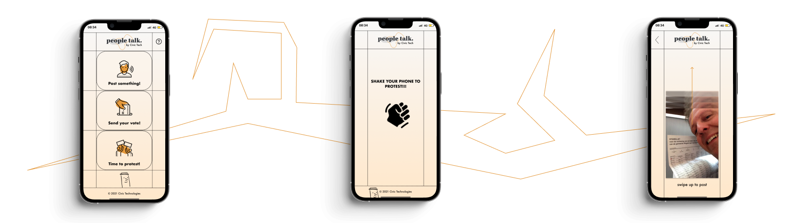
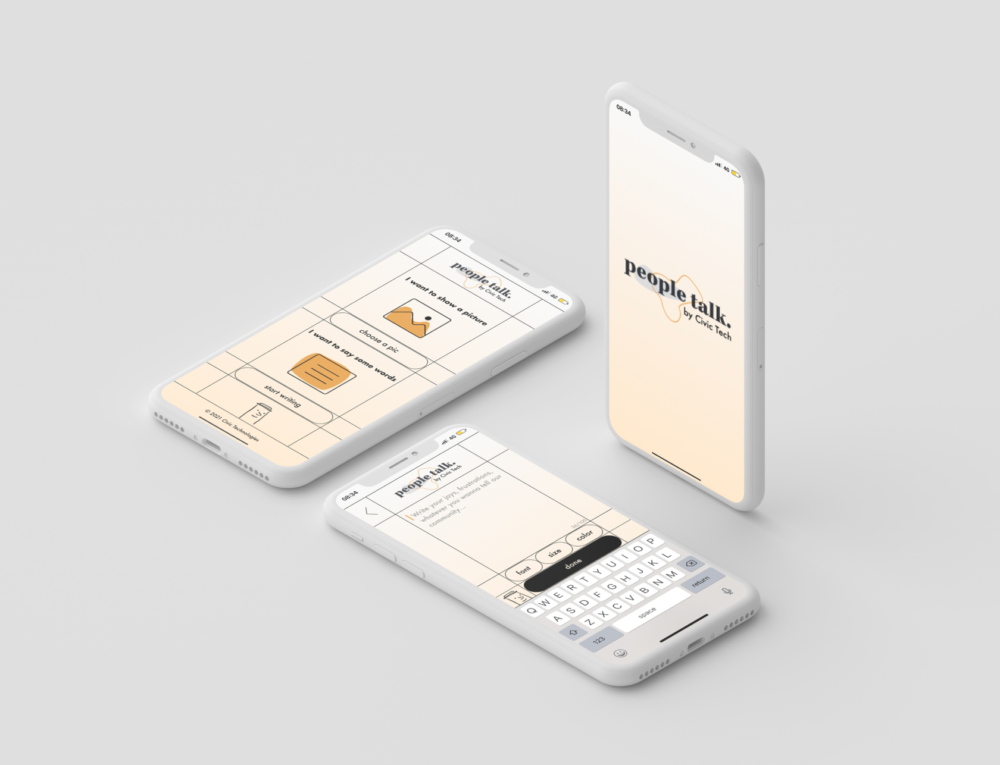
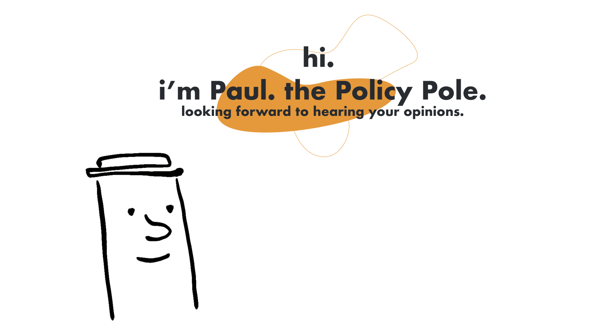
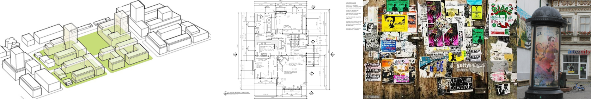

In year 2, second semester of UXD, we were assigned clients (in this case Lectoraat Civil Technology), and based
on their design brief my team and I had to create and conceptualize a virtual and physical citizen assembly
room, where citizens of The Hague could come together as a community and participate in local politics.
My role in the team was creative direction, but also visual and graphic direction. We all contributed, though,
to the research and design of the product, and no decision happened without everyone discussing it and sharing
their opinions.


The main inspiration for the Policy Pole (Paul) came from the well known advertising poles where citizens show
themselves, their opinions and their opinions of others’ opinions.
The secondary muse were cadaster/urban planning technical drawings, which dictated the aesthetic and visuals and
guided the process.
